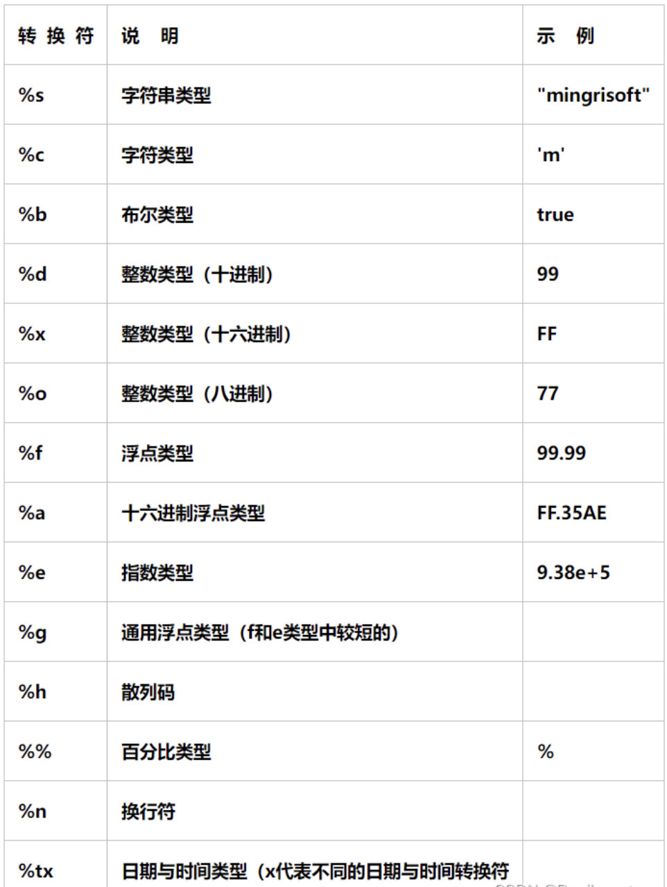

六、java基础-01
一、Java环境搭建
1、Java介绍
#1 咱们在之前的jadx 反编译apk 的过程中，发现--》反编译回来的代码---》java代码--》看不懂代码--》无法逆向--》接下来我们要学习java 基础
-目标：不是为了做java开发
-目标：只是为了看懂 反编译回来的java加密逻辑
#2 java 编译型语言--》区分于 Python
python，js，php：解释型语言
开发，运行：都需要python解释器，天然跨平台，没有编译的过程
如果要把代码给别人--》别人可以看到我们的源代码
java：编译型语言
开发需要jdk环境，java源代码--》需要编译--》字节码文件--》字节码文件运行在java虚拟机之上
跨平台--》java的字节码文件运行在 虚拟机之上--》不同平台安装不同平台的虚拟机，java字节码可以顺利运行
java运行是字节码文件，不是原代码--》不会泄露掉真正的java代码
【字节码文件可以反编译--》逆向】
c/c++/go:编译型语言
需要编译--》区别于java--》直接编译成 可执行文件（win:exe,mac,Linux:这个平台可执行文件）
如果在win平台上编译后的可执行文件，无法运行在 mac，linux上的
只能在不同平台编译---》运行在不同平台
好处：一旦编译过后，就是可执行文件，不需要额外安装其他的东西
坏处：不跨平台，需要在不同平台编译
# 3 java到的体系
-Java se：java基础--》变量，方法，面向对象，包，文件操作，并发，网络
-学会它--》做java开发--》安卓开发
-必学
-java ee：java web方向，jsp，请求与响应--》java工作基本上都是这个方向
java工程师---》本质大部分都是java EE工程师
ssh，ssm，SpringBoot，SpringCloud：spring公司的框架，方便做java ee
-java me:java手机方向开发--》不是安卓--》山寨机--》应用--》打开--》java小图标--》那些软件是用java me写的--》没有这个方向了
#4 jdk jre jvm
-jdk:Java Development Kit:java集成开发工具包--》java开发者必须下载安装这个软件，装在不同平台--》包含 jre，和内置的jar包
-jre:Java Runtime Environment 即Java运行环境--》java程序要运行，必须安装这个软件，装在不同平台上
好多人运行java软件，直接装了jdk
-jvm：java虚拟机，java的字节码文件必须运行在java虚拟机之上
-正是因为jvm的跨平台，可以装在不同操作系统上，java程序是跨平台的
-jadx 反编译工具--》只需要装jre即可--》他就可以运行，直接装了jdk
因为jdk包含jre
-安卓手机：虚拟机不是jvm，谷歌公司自己开发的虚拟机
# 4 如果jdk安装完成--打开cmd--输入
java -version
java version "1.8.0_371"
Java(TM) SE Runtime Environment (build 1.8.0_371-b11)
Java HotSpot(TM) 64-Bit Server VM (build 25.371-b11, mixed mode)
# 5 关于jdk版本
-JDK 22 最新
-咱们用jdk 1.8
-百分之85以上的做java的公司，都在用jdk 1.8 --》jdk8
-使用jadx反编译回来到的代码--》都反编译成jdk1.8的代码
# 6 java 是 sun公司推出的---》被甲骨文 收购了--》oracle 官网下载
-java 本来是开源免费的
-被oracle收购后--》oracle收费
-jdk源代码 开源的
-更新，加新功能---》oracle要收费
-第三方基于开源代码编译成自己的jdk
-oracle JDK # 非商业用途也免费
-open JDK # 免费的
-毕昇jdk
2、安装jdk--配置环境变量
#1 安装 把老师给的安装包，一路下一步安装即可
-安装完--》弹出一个是否安装jre提示
-可以装可以不装：
-不装：jdk中自带jre--》不用装了
-装了：在别的位置又有个jre的环境
# 2 配置环境变量 --》正常可以用--》但是作为专业的java开发--》咱们需要配一下
2.1 新建 JAVA_HOME D:\Program Files\Java\jdk-1.8 # java的安装目录
-以后JAVA_HOME 就代指后面的路径
2.2 新建一个 CLASSPATH
CLASSPATH .;%JAVA_HOME%\lib\dt.jar;%JAVA_HOME%\lib\tools.jar;
2.3 path中加入--》可执行文件，在任意路径下执行都会有反应
%JAVA_HOME%\bin
%JAVA_HOME%\jre\bin


3、第一个HelloWorld
# jdk -->java 开发环境搭建好了
# 写一个java程序了
# 没有编辑器：python：pycharm java：IDEA,用记事本写,notepad++(自己装)
# 1 在文件中写入
public class HelloWorld {
public static void main(String[] args) {
System.out.println("hello world");
}
}
#2 编译代码 生成字节码文件 HelloWorld.class
javac HelloWorld.java
# 3 执行字节码文件
java HelloWorld

3、编辑器-新建项目
# 以后像Pycharm一样，在编辑器上开发
# 1 Eclipse https://www.eclipse.org/downloads/
Eclipse是一个免费的开源Java IDE，提供了丰富的功能和插件扩展。它支持Java应用程序、Web应用程序和企业级应用程序的开发，并具有强大的代码编辑、调试和测试工具。
# 2 My Eclipse https://www.genuitec.com/products/myeclipse/
MyEclipse是一个专为Java开发而设计的集成开发环境（IDE），它是Eclipse IDE的一个商业化版本。MyEclipse提供了许多功能和工具，旨在提高Java开发人员的生产力和效率
# 3 IntelliJ IDEA：https://www.jetbrains.com/idea/download/other.html
# 捷克 JetBrains公司--》IDEA--》编辑器全家桶
-Pycharm
-Goland
-Clion
-IDEA
-WebStorm
IntelliJ IDEA是一种商业化的Java IDE，也有免费的社区版可用。它提供了智能代码完成、代码检查和重构等功能，支持Java开发以及其他相关技术，如Spring和Hibernate，同属于Jetbrains系列，使用习惯跟Pycharm类似，我们选择此编辑器
# vscode：微软出的，免费
-java，python，go，前端。。。
# 我们使用idea，使用率高，跟Pycharm用起来很像
4、安装-破解idea
# 1 安装，科学使用（跟pycharm科学使用一样）
-ideaIU-2023.1.3.exe 一路下一步，跟pychrm安装一模一样
# 2 先打开 idea，让你输入 验证，咱们没有（花钱）--》关闭软件
# 3 运行老师给的激活工具（运行脚本）
等着它弹出 done
# 4 打开idea，输入激活码，就可以了
-pycharm
-Clion
-IDEA
-GOland

5、新建项目


二、Java语法快速入门
1、程序的入口
// java程序入口为类中的static的viod的main函数，参数固定为字符串数组
public static void main(String[] args) {
//代码，程序从这里开始执行的
}
// python
if __name__=="__main__":
代码
2、文件名
# 1 文件中【HellWorld.java】,只能有一个public类，并且 文件名 必须和 类名 一致
# 2 文件中可以有多个类，但是只能有一个public类，并且public类的名字需要和文件名一致
# 3 如果文件中，有多个类，并且不用public修饰，文件名可以是任意类型
3、类规范
public static void main(String[] args){
}
### 1 类名规范
类名首字母必须大写，使用驼峰命名(Python也是)
Hello UserInfo PersonApplication
### 2 类前有修饰符
-public
-不写（default）
### 3 类中成员（变量，方法），修饰符
public、private、protected、default（不写）
-public：公有的,所有其他类中都可以使用
-private：私有的，只有在当前类中可以使用
-protected：受保护的，只有在当前包下的类中可以使用
-default(不写)：默认
### 4 static 静态成员方法
无需类实例化，直接可以调用--》等同于python的类方法，使用classmethod修饰的
### 5 void 没有返回值
四、基本语法
1、注释(跟js注释一样，区别于python)
# 1 单行注释
代码前加 //
快捷键：【注释 ctrl+/ 】 【 取消注释 ctrl+/ 】 跟pycharm一样
# 2 多行注释
/*
多行注释
多多行注释
可以换行
*/
快捷键：【注释 ctrl+shift+/ 】 【取消注释 ctrl+shift+\ 】
# 3 文档注释
包含在“/**”和“*/”之间，也能注释多行内容，一般用在类、方法和变量上面，用来描述其作用。注释后，鼠标放在类和变量上面会自动显示出我们注释的内容
/**
*
* @param a
* @param b
*/
public static void add(int a, int b) {
System.out.println(a + b);
System.out.println(name);
}
2、变量和常量
### 变量
// 1 定义变量
// 类型 变量名 = 变量值
String name = "justin"; //定义
name = "彭于晏"; // 修改值
System.out.println(name); // 在控制台打印
int age =19;
System.out.println(age);
String hobby;
hobby="篮球";
### 常量--》恒定不变，一旦定义，以后不能改 final 关键字修饰
final String school="清华大学";
// school="北大"; // 以后不能改
System.out.println(school);
3、输入和输出
# 输出，在控制台打印
// 输出--》控制台打印
System.out.println("hello"); // 打印并换行
System.out.print("world"); // 打印，不换行
System.out.print("justin");
System.out.println();
String name="justin";
System.out.printf("变量的值是：%s\n",name);
# 输入，接受控制台输入 python中的input
import java.util.Scanner;
System.out.print("请输入index名字：");
Scanner input=new Scanner(System.in);
String inputName=input.nextLine();
System.out.printf("您输入的名字是：%s",inputName);

4、条件语句
# if -----else if ----- else
# 用户输入分数，打印 及格，良好，优秀
import java.util.Scanner;
public class Demo01 {
public static void main(String[] args) {
// 接受用户输入
System.out.print("请输入您的分数：");
Scanner scanner = new Scanner(System.in);
// int score=scanner.nextLine();
int score = Integer.valueOf(scanner.nextLine()); // 强制类型转换，字符串转成int
if (score >= 90 && score <= 100) {
System.out.println("优秀");
} else if (score >= 70 && score < 90) {
System.out.println("良好");
} else if (score >= 60 && score < 70) {
System.out.println("及格");
} else {
System.out.println("不及格");
}
}
}
5、循环语句
5.1 while循环
// 打印出0--9
public class Demo02 {
public static void main(String[] args) {
int count = 0;
while (count < 10) {
System.out.println(count);
count+=1;
}
}
}
5.2 do while 循环
int count = 0;
// 无论条件是否成立，do都会至少执行一次
do {
System.out.println(count);
count++;
} while (count < 10);
5.3 for循环（用的最多）
for (int i = 0; i <10 ; i++) {
System.out.println(i);
}
break和continue跟其他语言完全一样
五、数据类型
- 字节类型 byte
- 整数类型
- byte 带符号字节型 8位 -128 ~ 127
- short 带符号字节型 16位 -32768 ~ 32767
- int 带符号字节型 32位 -231 -2147483648 ~ 2147483647
- long 带符号字节型 64位 -263 -9223372036854775808 ~ 9223372036854775807
- 小数类型：浮点型
- float
- double
- 字符串类型
- char
- 字符串类型
- String
- 数组类型
- int[]
- String[]
- 布尔类型
- boolean
1、字节类型
// 1 字节类型
byte a='A';
System.out.println(a);
2、整数类型
// 2 整数类型
byte b=127;
// byte b=128; 不能超范围
System.out.println(b);
short v2=10000;
// short v3=32768; 不能超范围
int v4=323234324;
long v5=554534353424L;
3、小数类型
// 3 小数
float f=1.123456789f;
double d=1.1234567890987654321d;
System.out.println(f);
System.out.println(d);
4、字符类型
// 4 字符类型
char v1 = '中';
char v2 = 'a';
char v3 = '贾';
System.out.println(v3);
5、字符串类型
// 5 字符串类型-->不能用单引号
String name ="justin";
6、数组类型
// 连续存储内存空间
int[] i=new int[3];
i[0]=4;
i[1]=5;
i[2]=6;
System.out.println(Arrays.toString(i));
// String[] names=new String[4];
String[] names=new String[]{"justin","lqz"};
// names[0]="justin";
// names[1]="xx";
// names[3]="小红";
System.out.println(Arrays.toString(names));
7、布尔类型
boolean b=true;
b=false;
System.out.println(b);